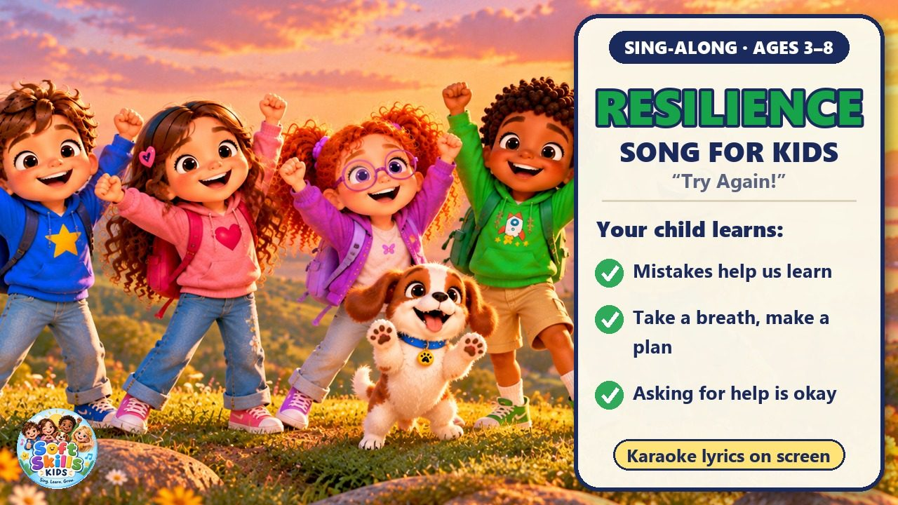
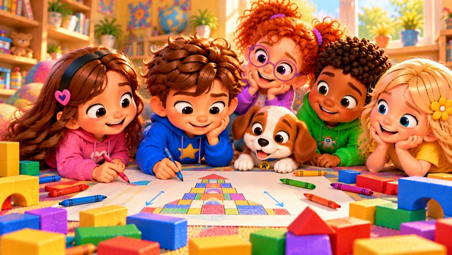
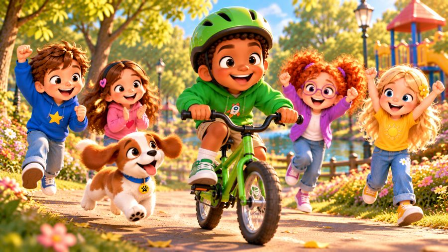
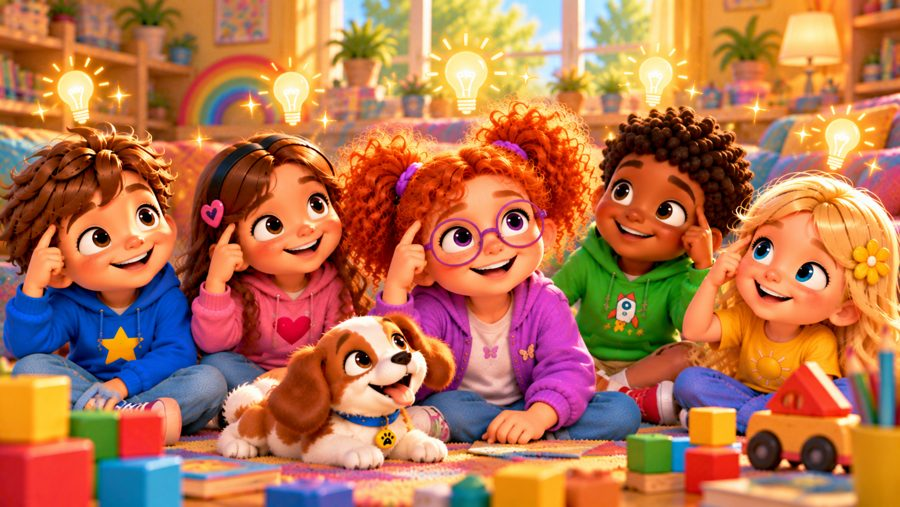

Try Again!
A growth mindset song for kids! 💪 Sing along with Max, Mia, Jay, Lily, Rosie and Buddy the puppy as they learn that mistakes are okay — take a breath, make a plan and TRY AGAIN!
"Try Again!" is a sing-along resilience song for kids about not giving up. When a block tower falls, a bike wobbles or a paper plane crashes, the kids learn to stay calm, think of a new way, ask for help and keep trying. With big karaoke lyrics on screen, it's perfect for preschool, kindergarten and early elementary kids (ages 3–8), at home or in the classroom.

▶💡 Why this skill matters: never give up
Children who keep trying after a mistake learn more, feel braver and become more confident over time. Perseverance teaches them that “I can’t do it… yet” is part of learning. Praise effort instead of results (“You kept going!”) and share your own mistakes and how you tried again.
👨👩👧 What your child learns
- Mistakes help us learn — "not yet" doesn't mean "I can't"
- A simple plan for hard moments: take a breath, make a plan, try again
- There's always another way to try
- Asking for help is part of the plan
- Doing your best matters more than being the best
💬 Talk about it after the song
- What is something you couldn't do before, but can do now?
- What can you do when something feels too hard?
- Who can you ask for help?
🏅 Quiz & Certificate
Watched the song together? Now read each question aloud — your child points to the right picture. Answer all 6 questions and your child earns a printable certificate!
🔒 The name is only used to draw the certificate on your device. We don't save or send anything.
You did it! 🎉
All 6 answers are right! Type your child's name to make the certificate.
🖨️ Free printables
Free for home and classroom use. Print on A4 or Letter paper.
🖼️ Scenes from the song






🎵 More songs


🎤 Lyrics – Try Again!
Oops! It fell!
Oh, that's okay!
Take a breath...
I'll try another way!
One, two, three...
Let's try again!
I built a tower way up high,
Block by block, it touched the sky.
Then crash, crash, crash!
It tumbled down,
All my blocks fell on the ground.
I felt upset, I wanted to stop,
But then I looked at every block.
I took a breath and made a plan,
Picked them up and tried again!
I don't have to get it right
The very first time that I try.
Every mistake can help me learn,
So here I go — it's my turn!
Try again! Try again!
I can learn, I can grow!
Try again! Try again!
There's another way to go!
If it doesn't work this time,
That's okay — I'll be just fine!
Take a breath, make a plan,
And I can try, try, try again!
I tried to ride my bike today,
Wobble, wobble — wrong way!
My feet went down, I had to stop,
But getting better takes a lot.
I tried again, a little slow,
One more time — and off I go!
And if I need a helping hand,
I can ask — that's part of the plan!
I don't have to know it all,
It's okay to slip or fall.
Every try can help me learn,
So here I go — it's my turn!
Try again! Try again!
I can learn, I can grow!
Try again! Try again!
There's another way to go!
If it doesn't work this time,
That's okay — I'll be just fine!
Take a breath, make a plan,
And I can try, try, try again!
When something's hard...
What do we do?
Take a breath!
Take a breath!
Think of a plan!
Make a plan!
Ask for help!
Yes, I can!
Try a new way!
Here I am!
Did it work?
Maybe not!
Did I learn?
Yes, a lot!
What comes next?
TRY AGAIN!
Not yet doesn't mean "I can't."
Not yet means I'm learning!
Step by step,
Day by day,
I get stronger on the way!
Try again! Try again!
I can learn, I can grow!
Try again! Try again!
There's another way to go!
If it doesn't work this time,
That's okay — I'll be just fine!
Take a breath, make a plan,
And I can try, try, try again!
Try again! Try again!
Every try can help me grow!
Try again! Try again!
There's so much more that I can know!
I don't have to be the best,
I just have to do my best!
Take a breath, make a plan,
And I can try, try, try again!
Oops! It fell!
That's okay!
I learned something new today.
Take a breath,
Make a plan...
And try again!